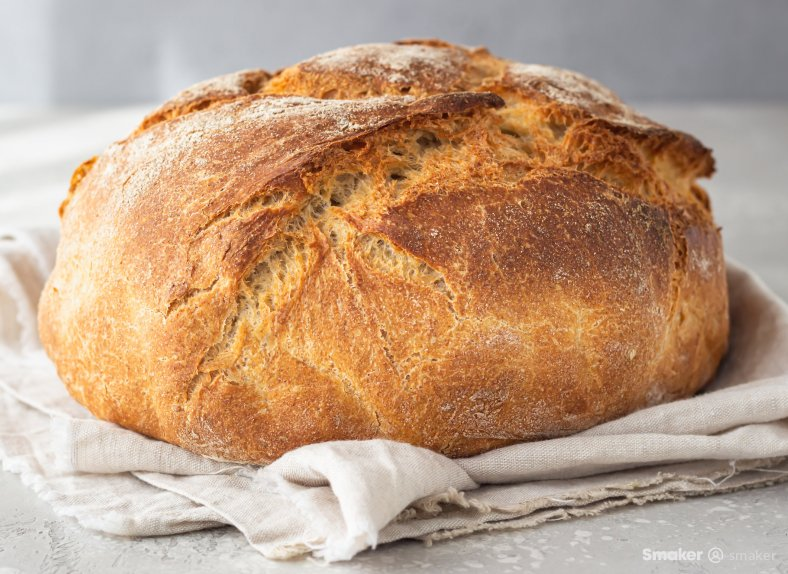

Domowy, świeżutki, z chrupiącą skórką.
Taki jest właśnie idealny chleb.
Z tym prostym przepisem już w zaledwie trzy godziny będziesz
mógł/mogła rozkoszować się nim dowoli.
Czas przygotowania: 3 godziny
Porcja: 4-5 osób
Poziom trudności: Średni
Składniki potrzebne do przepisu:
○ 720g mąki (około 4,5 szklanki)
○ 550ml ciepłej wody (2 i 1/4 szklanki)
○ 80g świeżych drożdży
○ 15g soli (około 3 łyżki stołowe

Sposób przygotowania
Do miski wlej wodę, dodaj mąkę i drożdże.
Dobrze wymieszaj ze sobą składniki.
Następnie dodaj soli i wyrób ciasto.
Możesz wykorzystać do tego robota kuchennego
z hakiem wyrabiania ciasta.
Ciasto przełóż z powrotem do miski i odstaw do urośnięcia
na dwie godziny w ciepłym miejscu.
Po dwóch godzinach ponownie wyrób ciasto i wyłóż na blaszce
wyłożonej papierem, formując kształt chleba.
Rozgrzej piekarnik do 250 stopni. Do naczynia żaroodpornego
wlej gorącą wodę, a następnie postaw ją na dnie piekarnika.
Na wierzchu chleba zrób nacięcie, a następnie wstaw blaszkę
do piekarnika. Piecz przez 25 minut w 250 stopniach. Następnie
zmniejsz temperaturę do 220 stopni i piecz 40 minut.
Po upieczeniu otwórz drzwi piekarnika i odczekaj 15 minut, aby
ostygł. Gotowy chleb podawaj z ulubionymi dodatkami, smacznego🥰.